Nand2Tetris 计算机系统要素 硬件篇
Table of Contents
1. ALU
ALU设计图和计算逻辑。这里面每个input control bits都可以很简单地映射到具体的逻辑门上面，所以这个设计非常精巧。
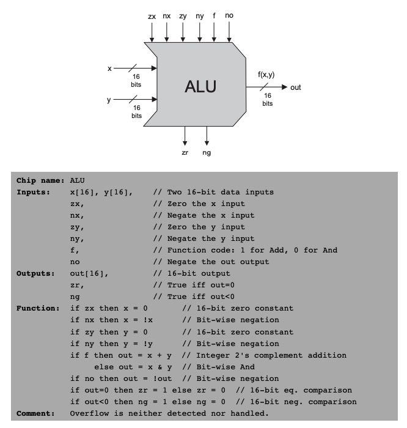
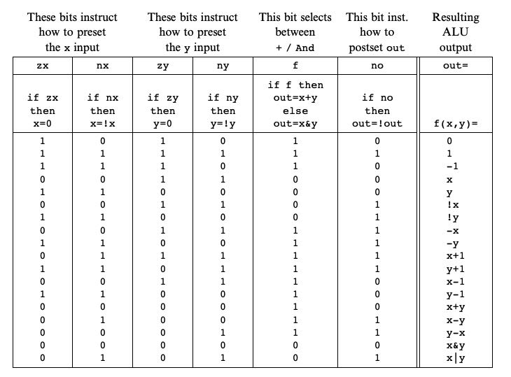
2. DFF and Bit
DFF(Data Flip Flop Gate)时序电路的基础，但是底层也是通过NAND门电路来实现的。时序门电路的特征是，状态的修改在下一个时钟周期才能体现在输出上。DFF可以用来存储数据，用来实现寄存器(Register)，内存(RAM)和程序计数器(PC)。寄存器可以认为是多个Bit组合起来的，而RAM则可以认为是多个Registers组合起来的但是有额外的地址输入，PC则可以认为是带有特殊功能的寄存器。
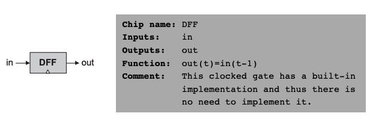
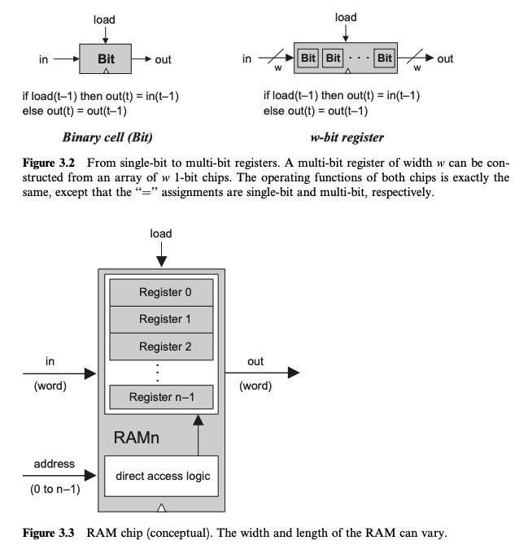
如何用NAND来实现DFF呢？可以看这篇文章 http://www.learningaboutelectronics.com/Articles/D-flip-flop-circuit-with-NAND-gates.php 大致思路是：使用两个NAND，一个NAND的output链接到另外一个NAND的input上。TODO: 这个需要在梳理一下过程。
3. Instruction
机器指令和ALU设计同样精巧：机器指令分为A(地址指令),C(计算指令). A指令以0开头，C指令以1开头。难点主要在设计C指令上面
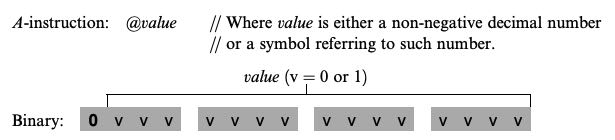 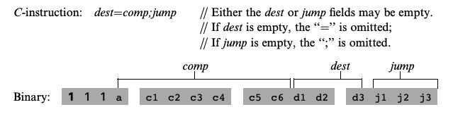
可以看到c1-c6是对应ALU的input control bits的，a则是涉及input(M寄存器 or A寄存器). d涉及输出寄存器，j设计PC寄存器。
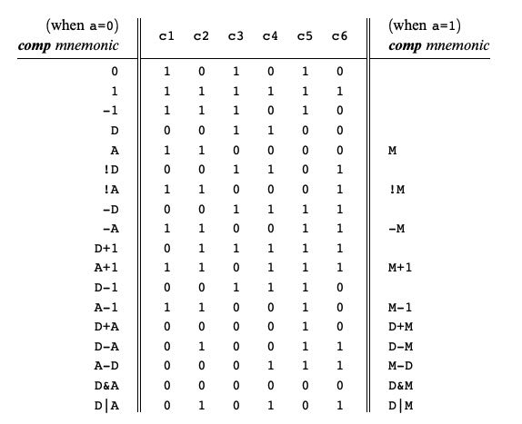 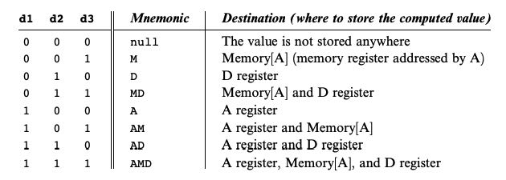 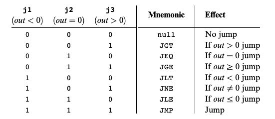
4. CPU
这些指令编码是非常重要的，涉及到CPU的设计。如果编码每个部分不能很好地分解并且很好地映射到门电路上的话，那么在设计CPU逻辑电路的时候就会非常复杂。
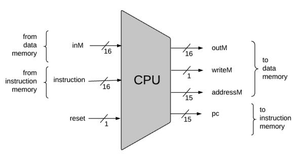
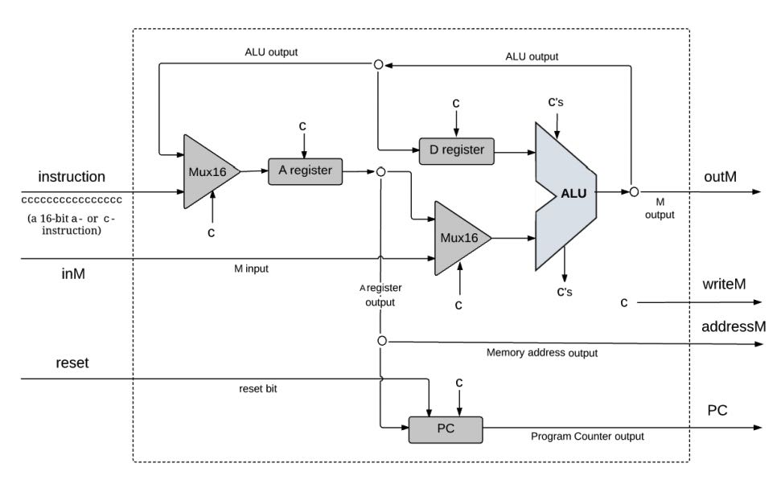